Welcome to the Driftwood tutorial! We will show you the basics to fully use the tool. Once you join a room, you will see that there is a giant grid. This is your canvas!
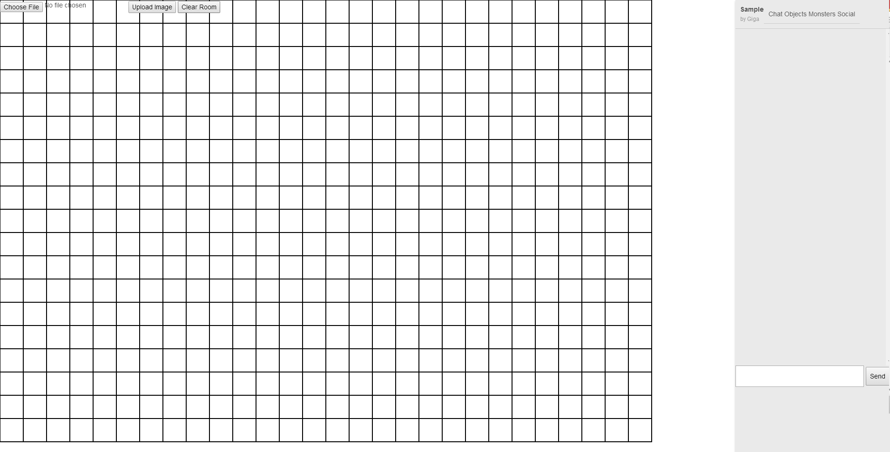
You can draw on this canvas. Just click and drag on the canvas to draw strokes! To enter 'Move' mode, just press the 'M' key and you will be able to move any strokes you made. You can also delete any you've made by selecting a stroke and pressing the delete key. Finally, you can return to "Draw" mode by pressing the 'D' key
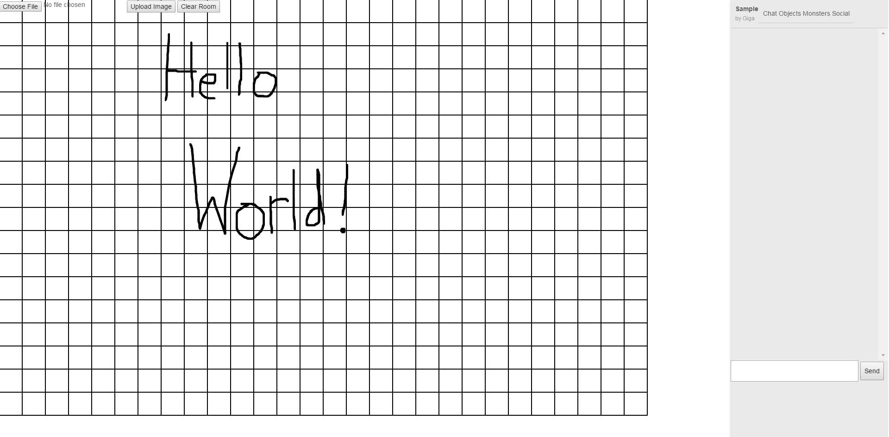
This is the Choose Image Button! Click it to start the image uploading process!
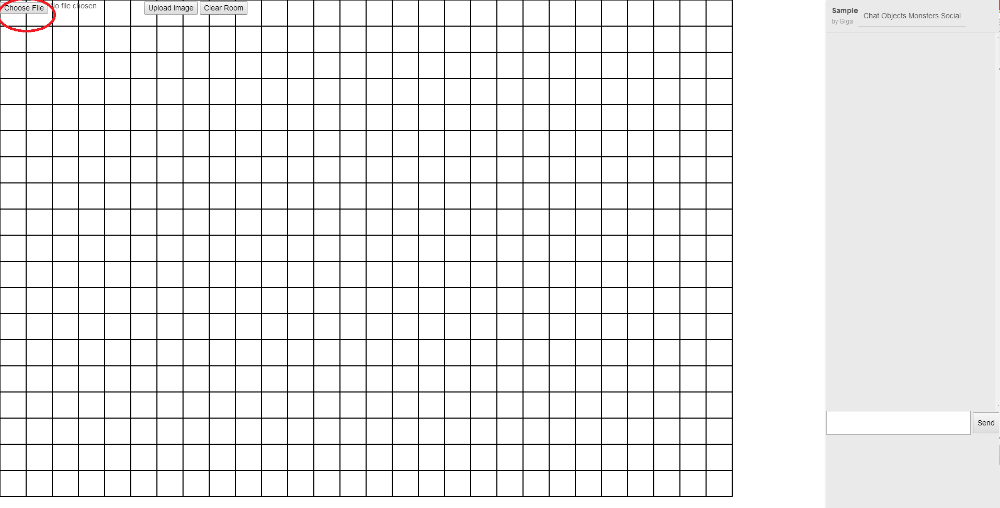
Find the image you wish to upload and press enter!
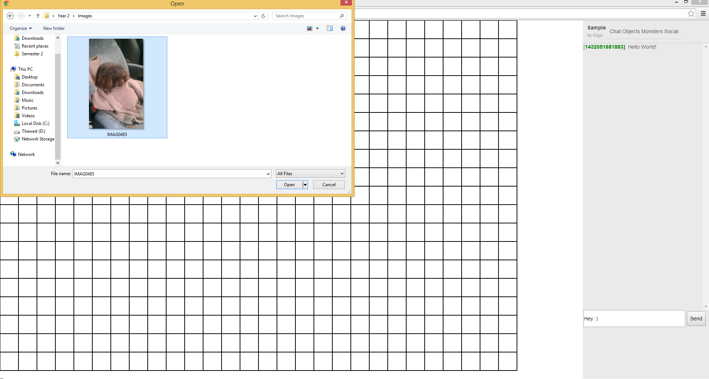
Finally press on the Image Upload Button to push the image onto the canvas!
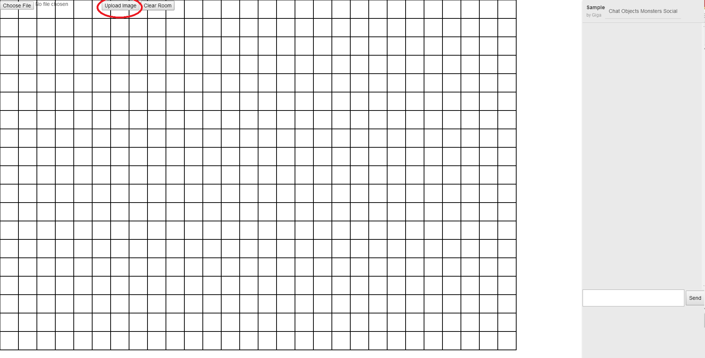
Here is an image with text on the canvas as an example! Like strokes, you are able to move and delete images that you make.
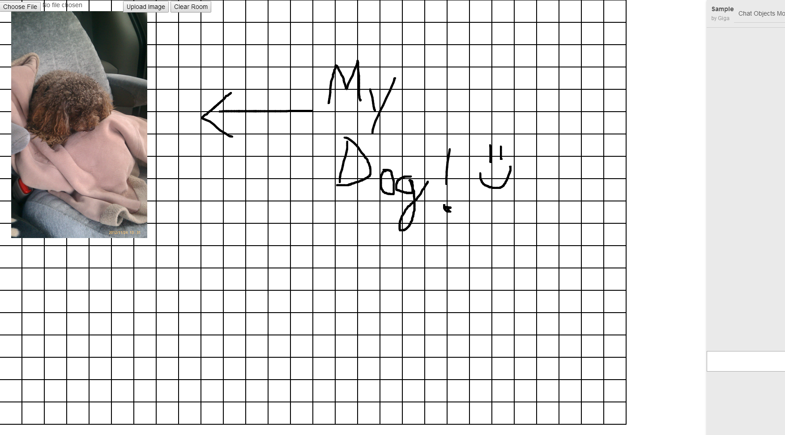
This is the Clear Room button! Click it to clear the canvas!
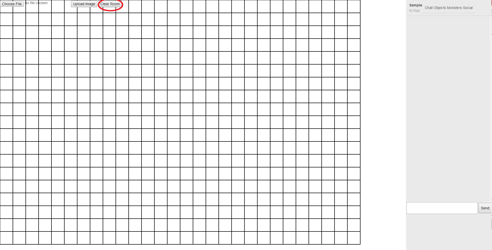
Driftwood also comes equipped with a fully operational chat system. Use it to converse with your role playing group!
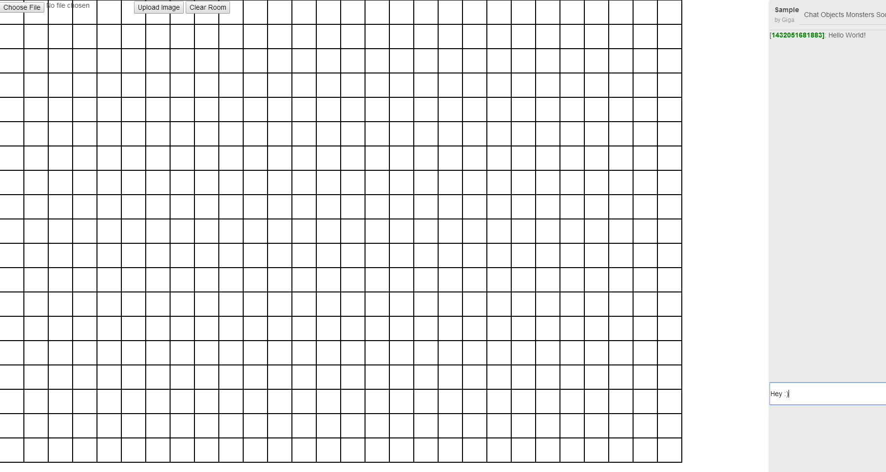
You can also create monsters too! Use the already existing Pathfinder monster index or create custom monsters and NPCs of your own!
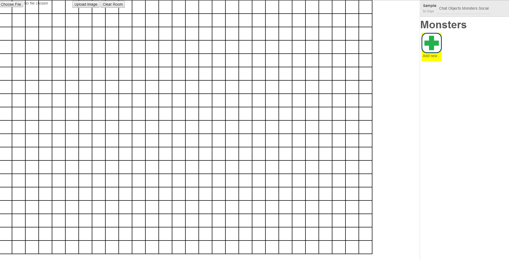
This is the Monster Menu! You are able to create Monsters or NPCs here! While we have some default data filled out, you're able to edit it to your heart's content!
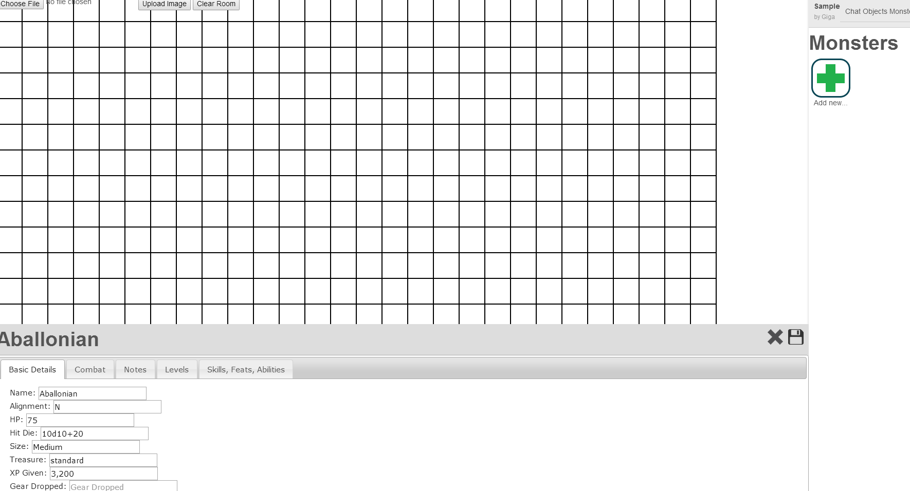
Press the Save Button to add it to the Monster Menu! The specific Monster with its data will be saved to access for every person in the room!
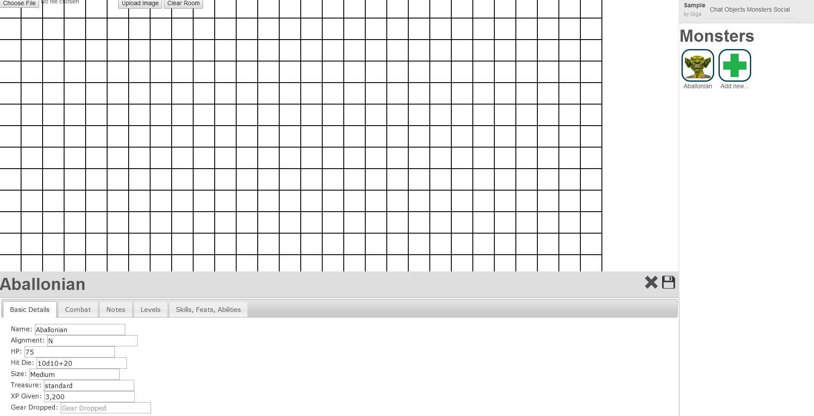
Finally, to add the Monster/NPC you made to the canvas, all you need to do is drag it onto the canvas! Just like strokes and images, you can move and delete them!
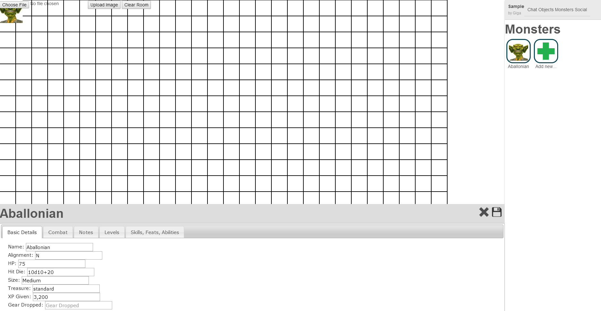